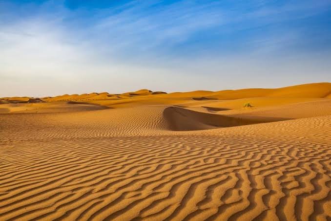
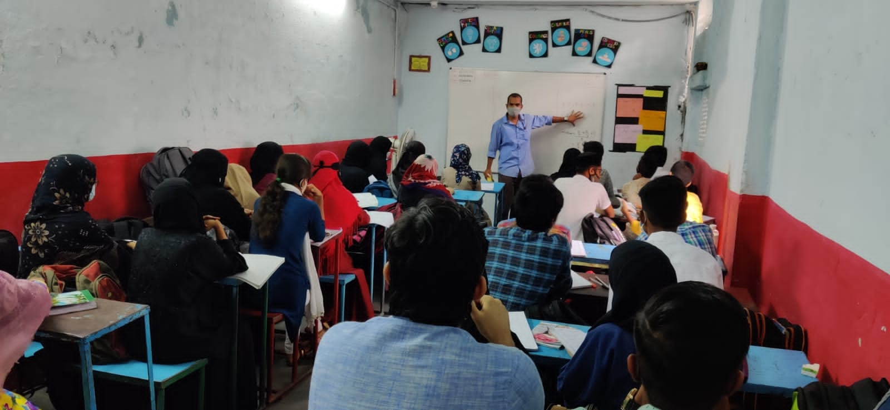

Place which have rain less than 10 inches(25 centimetres) per year is considered as a desert. Desert are a part of a wide class known as Drylands.It is mostly hot but there are deserts which are cold as well.Deserts covers more than one-fifthof the Earth's land area.


Characteristics/Factors of Deserts
Low rainfall- Deserts get very little rainfall and evaporation in a desert greatly exceeds the annual rainfall.
High temperature- In some deserts, temperature rise so high that people are at risk of dehydration and even death.
Aridity- Deserts have very little rainfall and due to that the deserts are dry in nature and have sandy soil.
Humidity- water vapour in the air is near to zero in most deserts.Light rains often evaporate in the dry air.
Antarctica desert
It is the worlds largest desert convering 5.5 millions square miles.